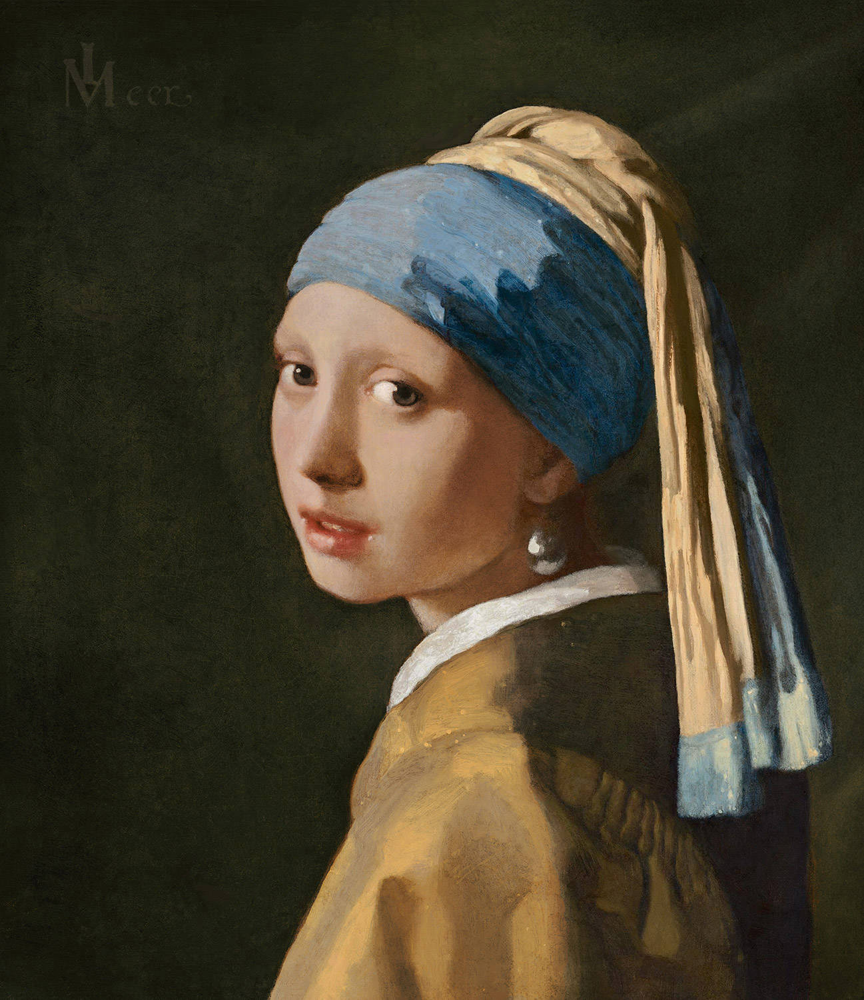
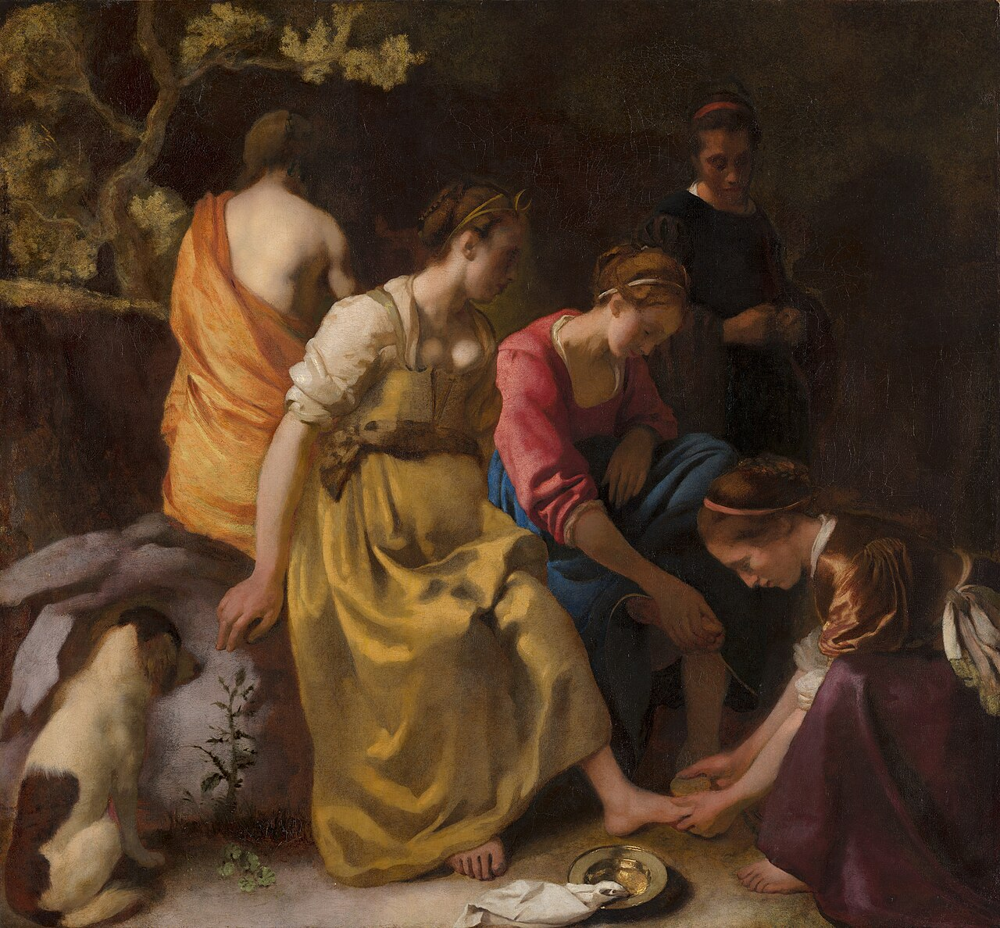
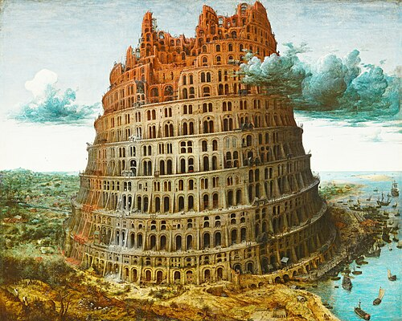
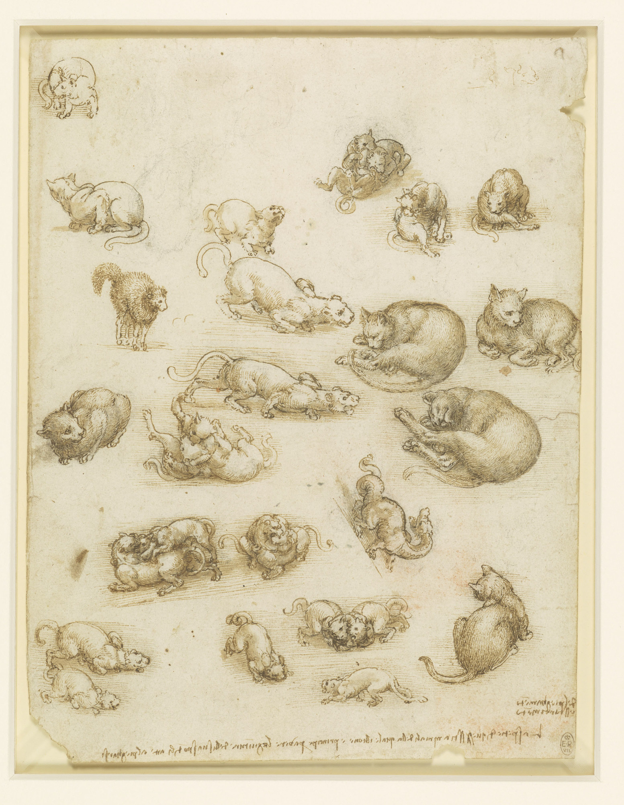
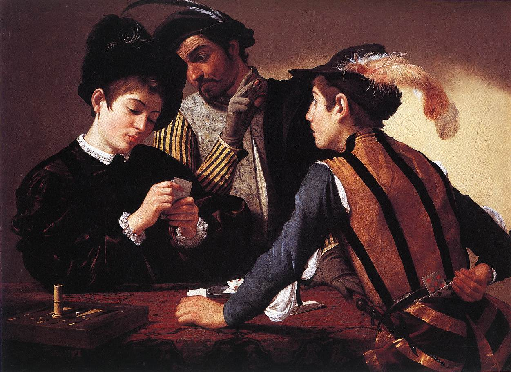

Ontdek mijn favoriete kunst uit de 15e/17e eeuw door afbeeldingen en uitleg.

Meisje met de parel is het beroemdste schilderij van Vermeer. Het is geen portret, maar een tronie: een fantasiekop. Tronies beelden een bepaald type of karakter uit, in dit geval een meisje in exotische kledij, met een oosterse tulband en een onwaarschijnlijk grote parel in het oor. Vermeer was de meester van het licht. Hier is dat te zien aan het zachte licht in het meisjesgezicht, de glimlichtjes op haar vochtige lippen. En aan de glanzende parel.

Vermeer staat vooral bekend als schilder van serene interieurs. Aan het begin van zijn carrière schilderde hij echter ook verschillende grotere Bijbelse en mythologische taferelen, waaronder Diana en haar nimfen. Dit is een van Vermeers vroegst bekende werken. Diana was de godin van de maan en de jacht, en tevens het toonbeeld van kuisheid. Ze speelt een rol in diverse mythologische verhalen, die het onderwerp waren van talloze verhalende voorstellingen door schilders uit de Nederlandse Gouden Eeuw. Vermeer koos ervoor om geen scène uit een specifiek verhaal over Diana te schilderen, maar om haar samen met haar nimfen af te beelden in een natuurlijke omgeving, waar ze rusten na de jacht.

Het schilderij De Toren van Babel is gemaakt door Pieter Bruegel the Elder rond 1563. Het schilderij is gebaseerd op het Bijbelse verhaal waarin mensen proberen een enorme toren te bouwen die tot in de hemel reikt. Volgens het verhaal straft God deze hoogmoed door ervoor te zorgen dat de mensen verschillende talen gaan spreken, waardoor ze elkaar niet meer begrijpen en de bouw stopt.

Een blad met meer dan twintig tekeningen van katten en leeuwen in allerlei houdingen: slapend, zittend, sluipend, spelend, vechtend, en in één geval angstig, staand met gebogen rug en rechtopstaande vacht. In de onderste helft, getekend onder een ongebruikelijke hoek, bevindt zich een studie van een draak, met zijn kop achterover gebogen over zijn schouder. Het is een van Leonardo's meest charmante tekeningen en bestrijkt het volledige scala van zijn stijlen, van het meest gestileerde en 'Leonardeske', zoals de kronkelende draak, tot het meest scherpzinnig geobserveerde en ongekunstelde, zoals in de vele studies van huiskatten.

In De Kaartspelers, door Caravaggio gemaakt, spelen de spelers een spelletje primero, een voorloper van poker. Links zit de bedrogene, verdiept in zijn kaarten, zich er niet van bewust dat de oudere kaartspeler zijn medeplichtige een signaal geeft met een opgeheven, gehandschoende hand (de vingertoppen zijn zichtbaar, zodat hij de gemarkeerde kaarten beter kan voelen). Rechts kijkt de jonge bedrieger verwachtingsvol naar de jongen en reikt achter zijn rug om een verborgen kaart uit zijn broek te halen. Caravaggio heeft dit onderwerp niet als een karikatuur van ondeugd behandeld, maar op een romanachtige manier, waarin de wisselwerking tussen gebaar en blik het drama van bedrog en verloren onschuld op de meest menselijke wijze oproept.